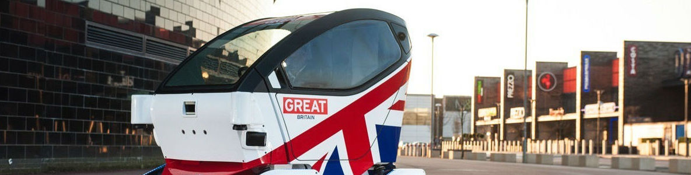
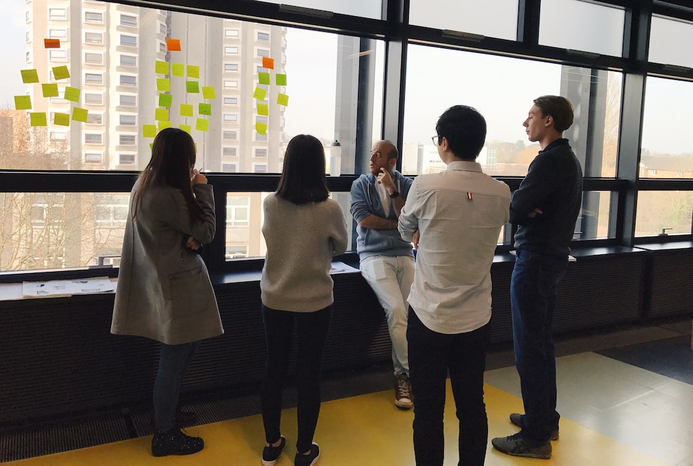
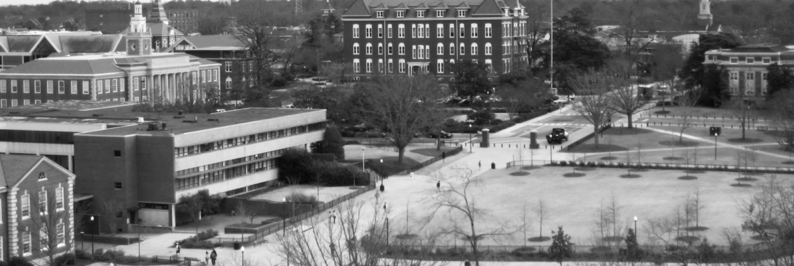
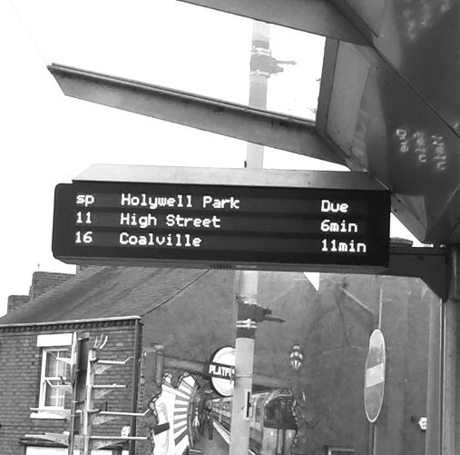
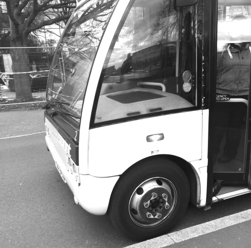
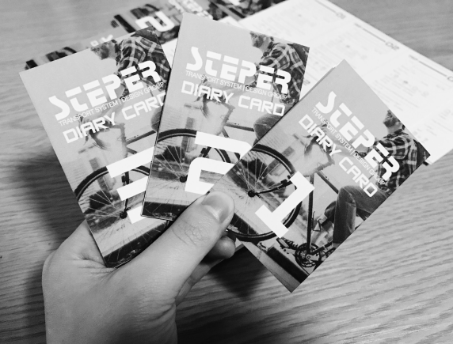
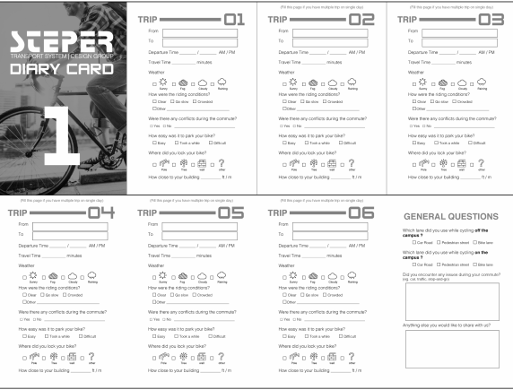
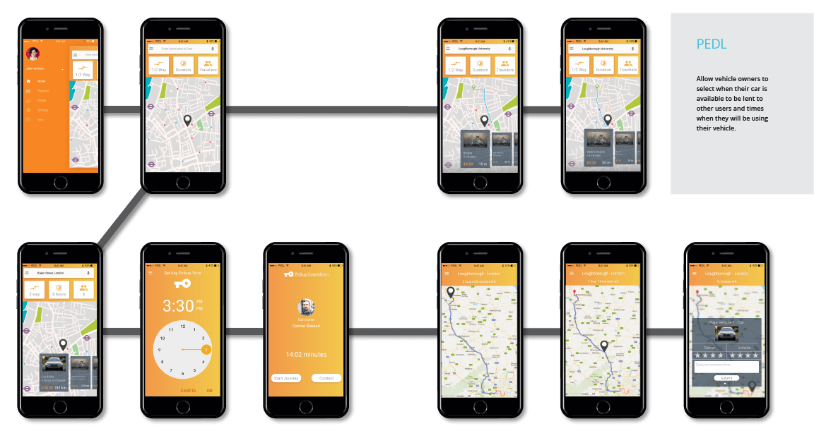
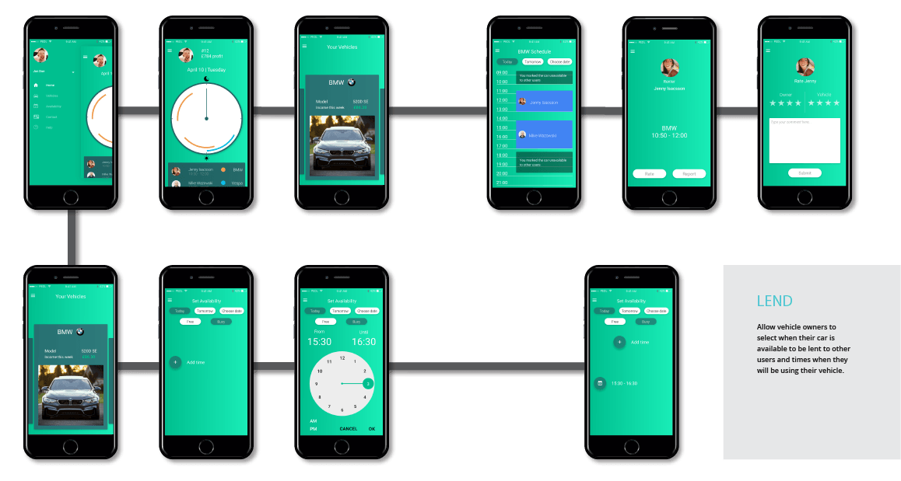

Catapult Transportation
About Catapult
This project was conducted with supervision from Transportation Systems Catapult. Catapult is one of eleven technology and innovation centers established and overseen by Innovate UK.
The Transportation Systems Catapult works in partnership with industry, governmental authorities and research bodies to champion innovation in transportation.
See MoreThe Group
For this project, I worked with a diverse team consisting of three other User Experience Designers and an Industrial Designer with backgrounds ranging from communication design, graphic design and industrial design.
My position in the group was not limited to gathering secondary research, assisting in planning and conducting primary research, analyzing our findings and preparing our report and presentation to the client.
Project Brief
Our task was to create or alter an existing mobility service to alleviate current transportation issues. Our main focus was to enable customers to have a unified system allowing them to travel short and long distances and reducing the number of vehicles on the road.
The primary goal during our research phase was to understand the unique needs of traveling in small cities and across the countryside. Our potential solutions for this phase ranged from enabling mobility sharing services for the countryside, easing handoffs between existing transportation services and fighting a common assumption in the UK that cars give people increased freedom of mobility.
Catapult did not have a specific service or application deliverable request, but they did have an interest in serving rural areas. None of our group members were UK citizens, which meant that we did not fully understand the emotional connection or importance of cars in the lives of locals.
Research Phase
To better understand the driving habits of drivers in the countryside, we initially conducted a survey. The participants of the survey were commuting students and professors in universities located around the English midlands. We received 117 participants for the study.
Catapult did not have a specific service or application deliverable request, but they did have an interest in serving rural areas. None of our group members were UK citizens, which meant that we did not fully understand the emotional connection or importance of cars in the lives of locals.
We began our research with an initial survey to understand how UK citizens view cars in their lives, and to understand their habits related to cars so we initially conducted a survey. The participants of the survey were commuting students and professors in universities located around the English midlands. We received 117 participants for the study.
We selected university campuses since they can mimic urban and rural areas, experiencing periods of high density traffic when classes begin and end. However outside of these peak periods a significant portion of land is allocated for largely unused parking, resulting in sprawling campuses.
There are many problems associated with surveys. Due to the short time frame designated for research, it was imperative to understand the general myths around driving and the pain points in commuting. The survey acted to give us a general understanding of these norms allowing for more specific follow up reserach.
Survey Safari
 Two of our group members went on a service safari to better understand the experience around public transportation in the Loughborough town center and the university campus.
Buses primarily used for universities have unique scheduling issues since there are high periods of demand prior to class times. This is not completely dissimilar to a city where there are high demand periods in the mornings and evenings.
Experience Diaries
 The third mode of analysis was for cyclists to find pain points existing in biking. The survey findings suggest that biking somewhat common, being the third most used transport. However, it was a distant third place behind walking and taking the bus.
Entrance Observations
Universities in England may have security barriers for drivers entering campus. This was a primary pain-point that drivers faced in their commutes, leading some commuters to prefer cycling to avoid the congestion. These barriers added congestion along nearby roads and when entering campus.
Data Analysis
One of the largest pieces of actionable information that came up during our analysis was obvious in retrospect; cars are used very little during the week by their owners. About 43% of our participants said they drive their car less than four times during the week.
This is significant because those cars still affect the infrastructure of towns, especially affecting dense urban areas such as London, Manchester and Birmingham. Parking is a major concern that affects how cities are developed.
Our Survey Safari found that public busses in the town often arrived late. Peak hours into campus had crowded buses over capacity. Bus drivers would change drivers in the middle of a route, also causing delays.
The cyclists into campus tended to enjoy their commutes, although a lack of bike lanes meant biking on campus could be confusing. Cyclists would generally use the sidewalks, although they contributed to congestion at the school’s entrance since the campus is located on a hill.
Data Analysis
Our solution is called PEDL.
PEDL is a mobility service that ties together multiple modes of transportation: cars, scooters and bikes. This allows journeys to be simplified to reduce handoffs between separate modes of transportation, such as trains, buses and bikes.
One of our primary findings was that cars are vastly under-utilized by their owners, so this service could utilize unused vehicles instead of them taking up much needed space around dense areas. Car owners can rent them to other users depending on the times their car is unused.
Reducing the amount of cars in parking lots and in dense areas allows fewer cars to become more useful to drivers, and reducing the impact of cars on the infrastructure of cities, towns and universities.
This brief allowed us to be creative in creating an initiative that could incorporate ideas with local governments to promote ride-sharing initiatives. Other users can carpool with a driver for a reduced fair for both parties. For locations with less vehicle options taxi fairs would be reduced to promote drivers lessening their impact on the city.
App Design
PEDL was dividing into two separate apps for two types of use-cases: renters and owners. Dividing them allows each to be more streamlined for their unique user flows.

For instance, PEDL Lend can bring up the owner’s car’s and calendar to edit its availability. PEDL begins with a map showing nearby vehicles and inputs to specify a destination and time.
Ethical Considerations
Unfortunately, with renting services many aspects can go awry. For loaning a car, an owner may worry that it would be stolen or have an accident and we took a few precautions to reduce the impact of these forces.
Privacy
We wished to strike a balance between trusting the renter and protecting the car while still having the information to act in malicious cases. Owners are given the option to install GPS units and dash-cams to monitor the status of the car and for accident insurance claims, respectively.
Dash-cams can save data of what occurs before an accident to assist in determining fault although the cams would not have attached microphones to allow the renter their own privacy.
Theft of these cars is a very real possibility and GPS trackers can help locate stolen vehicles. If a car owner decides not to use a GPS unit, location can be determined when the renter uses the app, bringing up its navigation features. This information would be given to authorities to assist in these cases when presented a warrant.
Insurance
Current insurance policies can be grey on fault for drivers other than the owner. Policies would be essential to help protect car owners. Our goal would be an insurance policy that caters to ride-sharing vehicles as ownership continues to decline. This policy would be combined with the PEDL owned vehicles and those rented by third parties.
Final Concept Critique
Solving for rural transportation is complicated, especially since recent technological advances focus on urban centers. Many urban center solutions utilize people to help provide solutions, which is possible since many people are located together and have similar traffic patterns.
Many of these urban center solutions are not viable in rural areas, given the larger gaps between residences, the smaller population sizes and the limited availability of different types of transportation.
Looking at Universities originally added bias into our solution, favoring those living within biking distance to a town center. Those living outside of cities may receive many of these benefits but those living in the country would not get all of these benefits. Additional research would be necessary to reduce their reliance on car ownership.
I am proud of the solution our group came up with and believe we worked well together as a team.
Please E-Mail e-mail me if you’d like to receive the full PDF booklet.